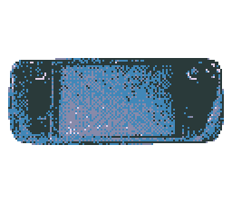
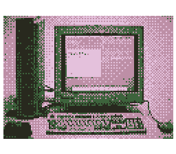

I've been chipping away at a project that is a labour of love; I'm working on a procedurally generated experience for the Nintendo DS (a console that holds a special place in my heart). It's an idea that I've had bouncing around in my head for some years now, and incorporates previous projects and bits of programming I've worked on with the DS. In working on this project, I've enjoyed sharpening my C++ skills (memory management - lol), designing systems for particular tasks and breaking them down into components to implement, and further exploring the inner workings of the DS. I hope to be able to share more about this soon, progress has been slow but steady, and I've had to work hard at not getting too sucked into over-engineering particular components.

I've been lucky enough to get my hands on a Steam Deck, and I love it. I've been surprised and very impressed with SteamOS and Proton; for example, S.T.A.L.K.E.R.: Shadow of Chernobyl ran flawlessly from the get-go, with fewer bugs, glitches and crashes than I ever had running it natively on Windows back in the 00s. I've briefly tinkered with some retro emulators, and am very much looking forward to diving into the back catalogue of PS1 and PS2 games that I didn't get around to playing back in the day. Having the Fallout universe accessible on-the-go is a dream. The desktop mode is handy, and with it the SD certainly lives up to it's Gibson-esque moniker, allowing a functional PC experience on-the-go. I've yet to tinker much with the OS, but eventually I'm hoping to *rice* the desktop to my liking, perhaps utilising a WM such as i3, and mapping the Deck's controls to optimize the experience (it can be the spiritual successor to the
Nintendeck
lol). The immutable root filesystem seems a sensible idea (to me as someone who has previously borked many Linux installs by being clueless), though it is nice to see projects and workarounds popping up, such as using root overlays etc., allowing changes to the root filesystem that persist with system updates. I'm looking forward to what arises from the collaboration between the Steam Deck community and veteran Linux wizards; with such an open platform we're bound to see some some cool stuff. At some point I'll make a slick Makyoplus boot animation >:)

Recently, entering via. a link found on a reddit user's profile, I stumbled upon the Web 2.0 revival, in the form of NeoCities sites, webrings and other such user-generated content. What I found turns away from content hosted on centralised platforms, with their associated limitations on expression of creativity, monolithic moderation and algorithm-driven content bias, and ever-present surveillance-advertising apparatus, instead harkening back to an earlier era, where anyone willing learn and tinker with HTML and CSS could create a personal website, expressing themselves with whatever visual aethetics and content they pleased. For an evening I followed webring links through site after site, fascinated by the broad range of eclectic and sometimes chaotically-styled content, hitting the nostalgia-nerve with echoes of an internet age I am just old enough to have experience the tail-end of, before the zaibatsus dominating today's web had properly rolled in. The personalized content on the sites I checked out felt like it had an aura of authenticity that
lacks in the scrolling feeds of curated platforms, and the idea of webrings is neat, little collectives of netizens drawn and held together in cyberspace by self-identified principles and ideals, reducing dependency on search-engines and platform's algorithmic sorting for discovering content on the web. Surfing some of these sites inspired me to redesign the visual aesthetic of this site, resulting in the recent stylistic overhaul.
In a similar vein, (i.e. deconstructing/rethinking conventional computing and networking practices/systems) I've been fascinated reading some of the following links;
Permacomputing ,
UXN ,
the Gemini Protocol.
Please feel free to get in touch!